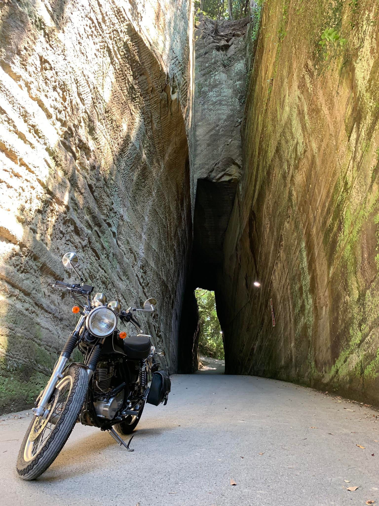
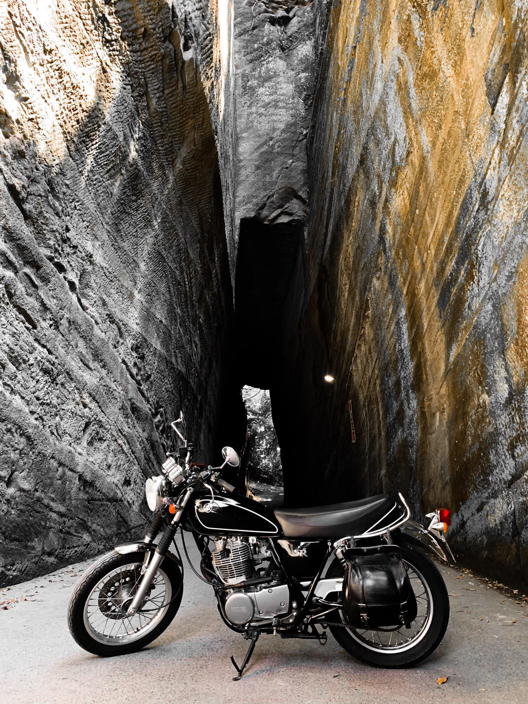
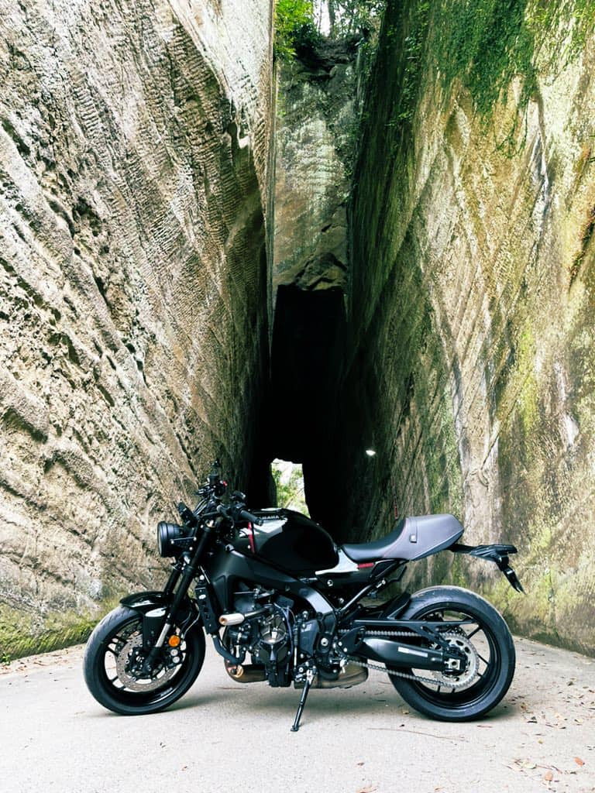

千葉県富津市に、岩を切り開いてつくった参道がある。高さ10メートルほどの岩壁が両側にそびえ立ち、その間をバイクがちょうど通れるくらいの幅で抜けていく。燈籠坂大師の切通しトンネル。一度行ったら忘れられない場所だ。
前回ここに来たのはSR400に乗っていた頃だった。あれから3年。XSR900に乗り換えて、また来てみた。
切通しトンネルとは
燈籠坂大師（とうろうざかだいし）は、富津市竹岡にある真言宗の寺院・東善寺の通称だ。境内への参道として、岩山を手作業で切り開いたトンネルが整備されている。総延長は約50メートル。切り立った岩壁は苔むしていて、光の入り方によって表情がまったく変わる。
場所は内房線・竹岡駅から歩いてすぐ。バイクや車でアクセスでき、駐車スペースもある。海沿いの国道を走っていると、案内板が出てくる。
3年前、SR400で来たとき


SR400で来たときも、同じようにトンネルの前でバイクを止めた。単気筒のエンジン音が岩壁に反響して、いつもより低く聞こえた気がした。そのときはまだ、3年後に別のバイクでまた来るとは思っていなかった。
XSR900で再訪


岩壁の苔の色も、光の差し込み方も、記憶とほとんど変わらなかった。バイクが変わっても、トンネルは変わっていない。当たり前のことなのに、なんとなくほっとした。
「バイクで出かけて、温泉入って、海鮮を食べる」——この日のプランはそれだけだった。このくらいシンプルな一日が、いちばん充実している気がする。
切通しの中は独特の静けさがある。バイクのエンジンを止めて、しばらくそこに立っているだけで気持ちが落ち着く。千葉の穴場スポットとして、もっと知られていい場所だと思う。
今回立ち寄った場所
1
燈籠坂大師 切通しトンネル
千葉県富津市竹岡（東善寺） / アクセス：JR内房線・竹岡駅から徒歩約5分。国道127号沿いに案内板あり。駐車スペースあり。